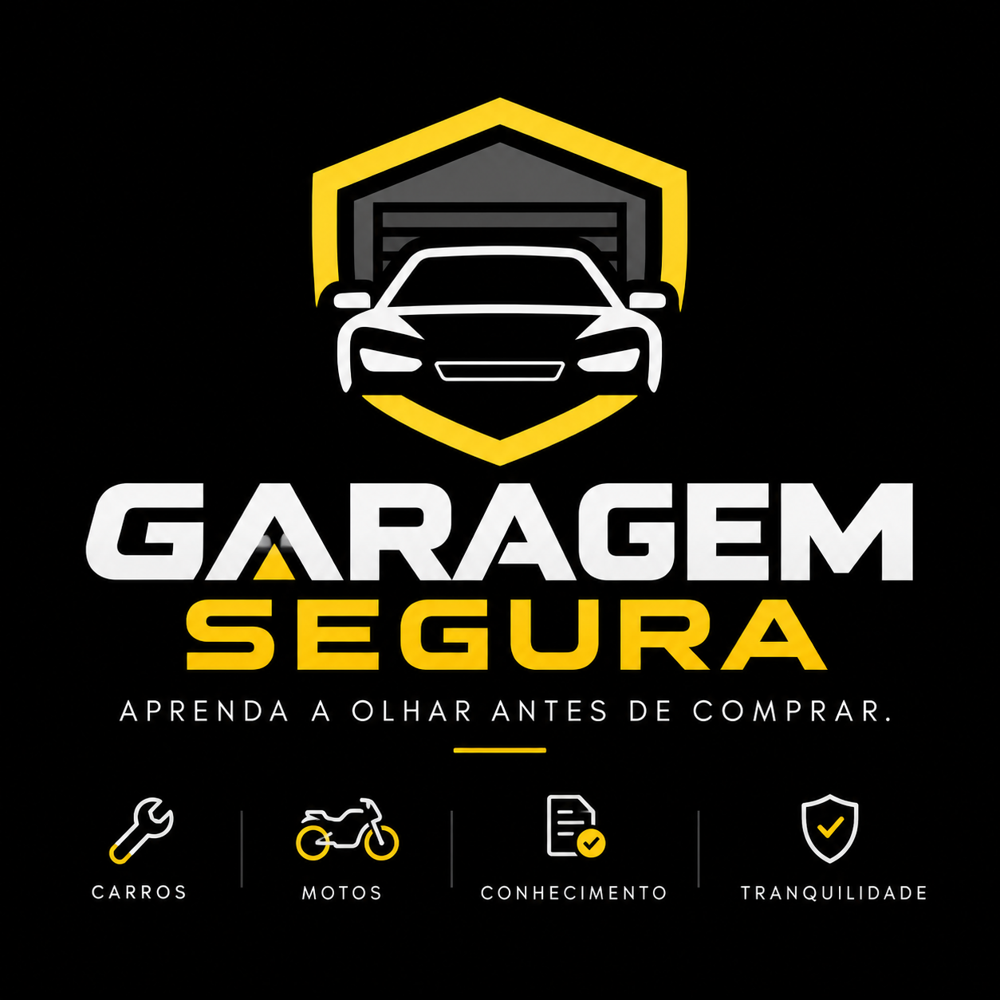

Aprenda a olhar antes de comprar.
Aprenda a fazer a primeira avaliação de um carro usado você mesmo. Entenda o que observar em mecânica básica, documentação, estrutura, elétrica e test-drive antes de colocar seu dinheiro no negócio.
Você não precisa virar mecânico. Precisa saber o que olhar.

Imagine que você tenha R$ 25 mil para comprar um Celta.
Você encontra um carro aparentemente bem cuidado por R$ 24.900. A pintura está bonita, o vendedor diz que está tudo certo e o carro anda normalmente. Mas você saberia o que olhar antes de entregar seu dinheiro?
R$ 24.900
Em poucos minutos de uma primeira avaliação, alguns sinais já podem mostrar que aquele carro merece mais atenção — ou que talvez nem faça sentido continuar gastando tempo e dinheiro nele.
Não é sobre descobrir todos os defeitos. É sobre aprender a identificar os riscos.
A Garagem Segura não substitui laudo cautelar, oficina ou especialistas. Ela ajuda você a fazer uma primeira triagem mais consciente e entender quando vale avançar para uma avaliação profissional.
Olhe melhor
Saiba onde estão os principais pontos de atenção antes de se empolgar com o carro.
Entenda o que vê
Aprenda mecânica básica e documentação sem linguagem complicada.
Proteja seu orçamento
Evite que uma compra aparentemente barata se transforme em um prejuízo grande depois.
Aprenda a classificar o risco antes de decidir.
Desgaste normal ou manutenção simples. Pode ser considerado na negociação sem necessariamente inviabilizar a compra.
Algo precisa ser investigado, negociado ou validado por um profissional antes de fechar.
Ponto que pode envolver custo elevado, segurança, documentação ou grande incerteza. Não avance sem avaliação especializada.
Garagem Segura — Primeira Avaliação
Um curso rápido e prático para quem quer aprender o básico necessário para avaliar melhor um carro usado antes da compra.
Anúncio, preço, vendedor, perguntas e sinais de alerta.
O básico sobre documentos, débitos, restrições e histórico.
Sinais de reparo, alinhamento, pintura e colisões.
Óleo, água, vazamentos, fumaça, temperatura e ruídos.
Painel, bateria, acessórios, desgaste e pontos de atenção.
O que observar dirigindo e como decidir entre comprar, negociar, investigar ou desistir.
Seu dinheiro é suado. Sua compra precisa ser segura.
Estamos construindo a primeira versão da Garagem Segura. Em breve, curso online, checklist prático e conteúdos para ajudar você a comprar melhor.
Acompanhar no Instagram